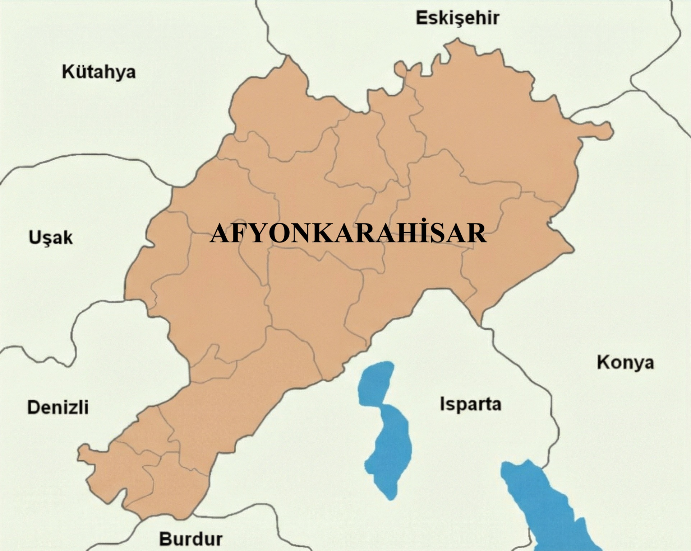
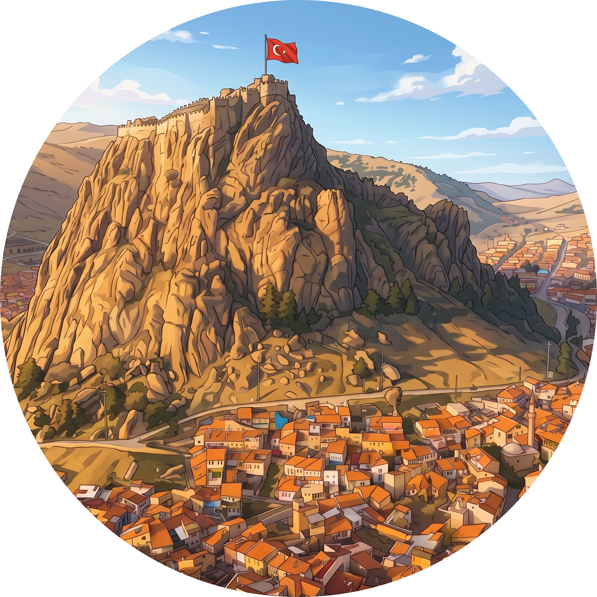
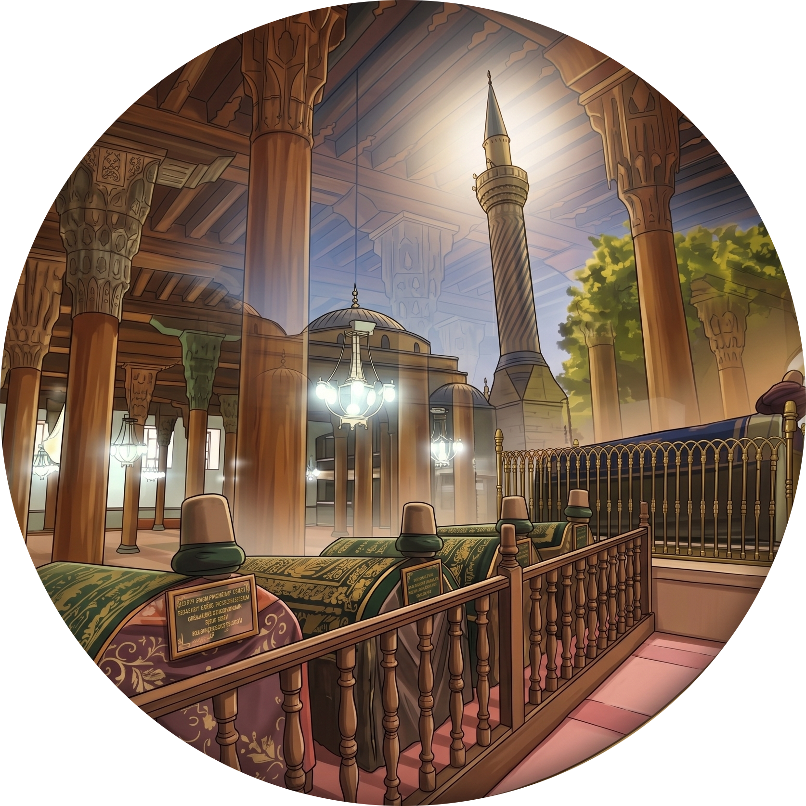
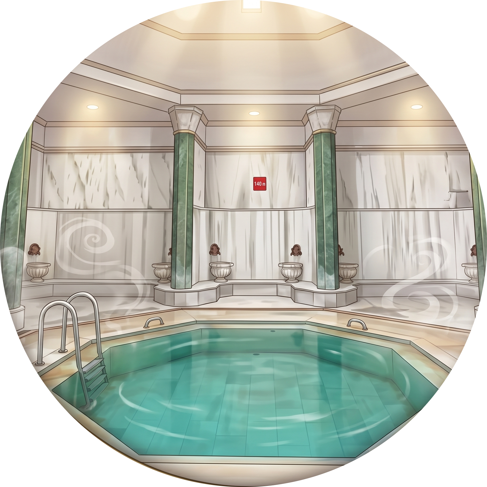
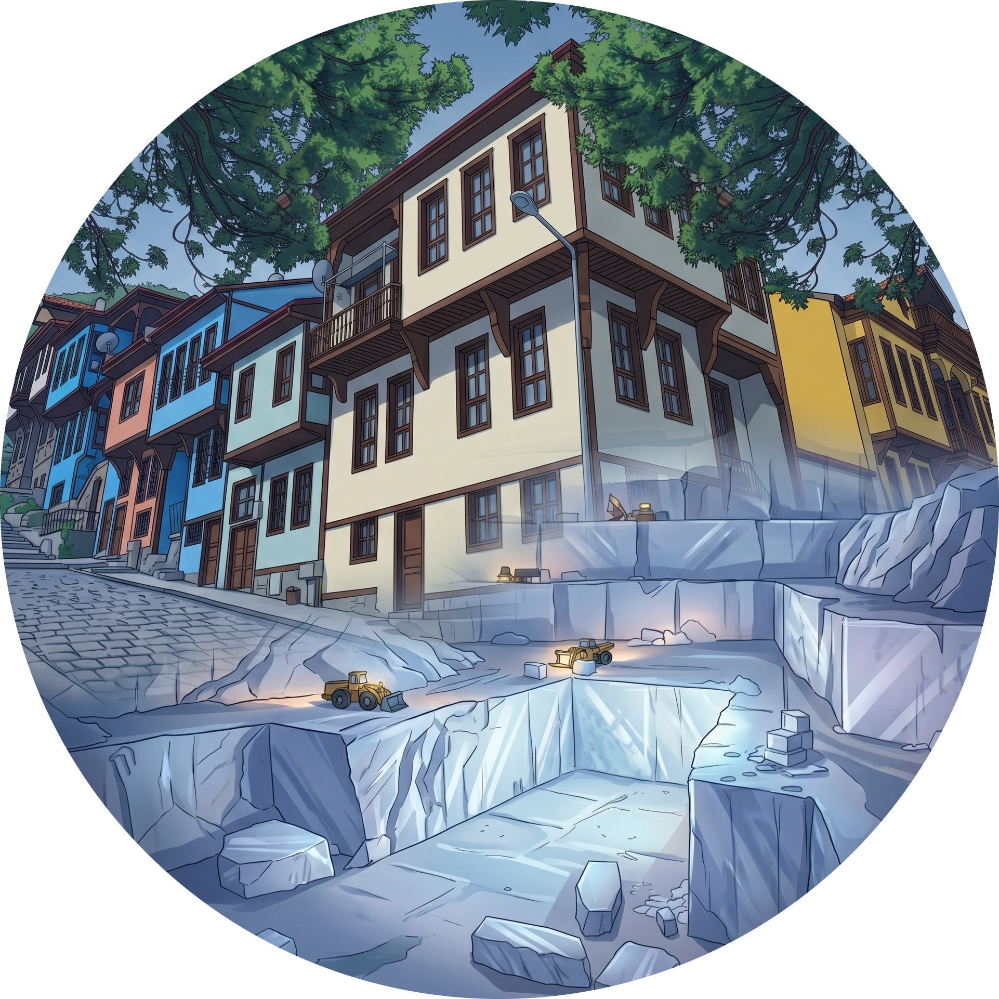

Afyonkarahisar'ın Kültürel Zenginlikleri
Ana Sayfa
Haritadaki ikonlara tıklayarak Afyonkarahisar'ın tarihi ve kültürel hazinelerini keşfedebilirsiniz. 🏰

Afyon Kalesi

Tarihi Camiler

Termal Turizm

Ahşap ve Mermer
